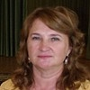

Дошкольное отделение гимназии № 1573
В 2015 году 56% первоклассников Гимназии № 1573 пришли из дошкольного отделения.
- Псковская улица, 10
- Псковская улица, 7к2
- Псковская улица, 11
- Абрамцевская улица, 24к2
Воспитатели
Воспитатели, которых чаще всего благодарят родители (отзывы и профили сотрудников взяты с официального сайта школы):|
Воспитатель
Федосеева Татьяна Владимировна
2 благодарности |
Нестерова Елена Анатольевна
2 благодарности |
Логопед
Жидкова Леся Леонидовна
2 благодарности |
 Воспитатель
Еланская Светлана Васильевна
Воспитатель
Еланская Светлана Васильевна
1 благодарность |
|

Муз. рук.
Аралина Оксана Валентиновна
1 благодарность |
Воспитатель
Трифонова Елена Петровна
1 благодарность |
 Воспитатель
Мазурец Галина Сергеевна
Воспитатель
Мазурец Галина Сергеевна
1 благодарность |
Физ. рук.
Болховитина Лариса Ивановна
1 благодарность |
|
Психолог
Кулагина Галина Владимировна
1 благодарность |
Отзывы
Данные собраны c официального сайта школы и через форму для отзывов.
Всем родительским коллективом группы №9 выражаем свою искреннюю благодарность педагогическому коллективу ГОБУ Гимназии №1573 СП №4. Изо дня в день вы дарите нашим детям свою заботу, ласку и любовь. Вы оставляете частичку своего тепла воспитанникам, нежно и заботливо оберегая их. Умело подобранные занятия, игры, упражнения создают волшебную атмосферу детства. Каждый ребенок окружен теплом и заботой.
Выражаем огромную благодарность директору АНТИПОВУ АЛЕКСАНДРУ СЕРГЕЕВИЧУ, за многолетний бесценный труд, высокий профессионализм, целеустремленность, грамотное и четкое руководство. Александр Сергеевич смог объединить вокруг себя талантливых и профессиональных педагогов. Ваша работа бесценна! Это поистине благородный труд, который закладывает основы будущего!
Особая благодарность заведующей Нестеровой Елене Анатольевне, за высокий профессионализм, активное участие в общественной жизни детского сада, за прекрасно организованный подход к воспитанию детей. Благодаря Вашему мудрому руководству, воспитатели прекрасно справляются со своими обязанностями, окружают детей теплом и вниманием, обучают их, развивают в них таланты, учат любить и уважать окружающих. Елене Анатольевне прекрасно удалось организовать уютный уголок, где лицо каждого ребенка отражает радость и восторг. Детский сад для наших детей это второй дом!
Выражаем огромную благодарность логопеду Жидковой Лесе Леонидовне. Это настоящий профессионал, с большим опытом работы и безграничной любовью к детям. Благодаря ее логопедической работе дети успешно преодолели речевые трудности, расширили свой словарный запас и кругозор, значительно улучшили память. Ведь правильная речь - это главный залог успеха всех начинающихся дел!
Выражаем благодарность воспитателю Федосеевой Татьяне Владимировне. Хотим отметить высокий профессионализм, чуткое отношение к детям, заботу, внимание и индивидуальный подход к каждой семье. Благодаря Татьяне Владимировне дети нашей группы получили первые самые нужные и самые важные для их дальнейшего обучения и для жизни знания, научились общаться, стали коммуникабельными, добрыми и вежливыми. Все это не маловажно для нашего общества в современном мире.
Особая благодарность воспитателю по физической культуре Болховитиной Ларисе Ивановне за укрепление физического здоровья детей и подготовкам к спартакиадам. Благодаря ее огромному труду и высочайшему профессионализму воспитанники не однократно были победителями на окружных и городских соревнованиях.
Выражаем благодарность педагогу-психологу Кулагиной Галине Владимировне за постоянную консультативную работу с родителями и проведенные занятия с воспитанниками, которые помогали быстрее справиться с трудностями.
Благодарим музыкального руководителя Аралину Оксану Валентиновну. Она познакомила наших детей с миром прекрасного: привила любовь к музыке, к ритму, к танцам! Все праздники были интересными, яркими и незабываемыми. Дети показывали сценки, театральные постановки.
Низкий вам поклон за все и огромное родительское спасибо! Благодаря вам, наша Гимназия №1573 по праву, считается одной из лучших в районе, а возможно и в городе. Это заслуживает огромного уважения!
С Уважением и искренней благодарностью,
коллектив родителей воспитанников 9 группы ГОБУ Гимназии №1573 СП №4.
Выпуск 2016 г.
Выражаем огромную благодарность директору АНТИПОВУ АЛЕКСАНДРУ СЕРГЕЕВИЧУ, за многолетний бесценный труд, высокий профессионализм, целеустремленность, грамотное и четкое руководство. Александр Сергеевич смог объединить вокруг себя талантливых и профессиональных педагогов. Ваша работа бесценна! Это поистине благородный труд, который закладывает основы будущего!
Особая благодарность заведующей Нестеровой Елене Анатольевне, за высокий профессионализм, активное участие в общественной жизни детского сада, за прекрасно организованный подход к воспитанию детей. Благодаря Вашему мудрому руководству, воспитатели прекрасно справляются со своими обязанностями, окружают детей теплом и вниманием, обучают их, развивают в них таланты, учат любить и уважать окружающих. Елене Анатольевне прекрасно удалось организовать уютный уголок, где лицо каждого ребенка отражает радость и восторг. Детский сад для наших детей это второй дом!
Выражаем огромную благодарность логопеду Жидковой Лесе Леонидовне. Это настоящий профессионал, с большим опытом работы и безграничной любовью к детям. Благодаря ее логопедической работе дети успешно преодолели речевые трудности, расширили свой словарный запас и кругозор, значительно улучшили память. Ведь правильная речь - это главный залог успеха всех начинающихся дел!
Выражаем благодарность воспитателю Федосеевой Татьяне Владимировне. Хотим отметить высокий профессионализм, чуткое отношение к детям, заботу, внимание и индивидуальный подход к каждой семье. Благодаря Татьяне Владимировне дети нашей группы получили первые самые нужные и самые важные для их дальнейшего обучения и для жизни знания, научились общаться, стали коммуникабельными, добрыми и вежливыми. Все это не маловажно для нашего общества в современном мире.
Особая благодарность воспитателю по физической культуре Болховитиной Ларисе Ивановне за укрепление физического здоровья детей и подготовкам к спартакиадам. Благодаря ее огромному труду и высочайшему профессионализму воспитанники не однократно были победителями на окружных и городских соревнованиях.
Выражаем благодарность педагогу-психологу Кулагиной Галине Владимировне за постоянную консультативную работу с родителями и проведенные занятия с воспитанниками, которые помогали быстрее справиться с трудностями.
Благодарим музыкального руководителя Аралину Оксану Валентиновну. Она познакомила наших детей с миром прекрасного: привила любовь к музыке, к ритму, к танцам! Все праздники были интересными, яркими и незабываемыми. Дети показывали сценки, театральные постановки.
Низкий вам поклон за все и огромное родительское спасибо! Благодаря вам, наша Гимназия №1573 по праву, считается одной из лучших в районе, а возможно и в городе. Это заслуживает огромного уважения!
С Уважением и искренней благодарностью,
коллектив родителей воспитанников 9 группы ГОБУ Гимназии №1573 СП №4.
Выпуск 2016 г.
Здравствуйте! От всей души поздравляю коллектив Гимназии с Днем знаний! Пусть новый учебный год будет успешным для вас и ваших учеников.
Хочу выразить огромную благодарность и признательность от имени всей нашей семьи руководителям и педагогам СП№5 Гимназии 1573.
В первую очередь Маргарите Геннадьевне Федяковой - прекрасному, чуткому руководителю за создание неповторимой атмосферы начальной школы, поддержание высокого статуса обучения и воспитания детей, хранение традиций.
Воспитателям подготовительной группы - Мазурец Галине Сергеевне и Трифоновой Елене Петровне - за высочайший профессионализм, доброту, настоящую любовь к детям, умение найти подход к каждому ребенку. Вы самые лучшие воспитатели, спасибо вам за наших дочек.
Учителю начальной школы Бранашко Наталье Геннадьевне - первому учителю нашей старшей дочери. Считаю, что отличные успехи и многочисленные победы на всевозможных конкурсах и олимпиадах, искренняя любовь к школе у нашей Даши - это ее заслуга.
Отдельно хочу поблагодарить Александра Сергеевича за отзывчивость, бескорыстную и искреннюю помощь в решении любых вопросов.
Удачи вам, крепкого здоровья, дорогие наши наставники, и процветания Гимназии!
Анна Ильина.
Хочу выразить огромную благодарность и признательность от имени всей нашей семьи руководителям и педагогам СП№5 Гимназии 1573.
В первую очередь Маргарите Геннадьевне Федяковой - прекрасному, чуткому руководителю за создание неповторимой атмосферы начальной школы, поддержание высокого статуса обучения и воспитания детей, хранение традиций.
Воспитателям подготовительной группы - Мазурец Галине Сергеевне и Трифоновой Елене Петровне - за высочайший профессионализм, доброту, настоящую любовь к детям, умение найти подход к каждому ребенку. Вы самые лучшие воспитатели, спасибо вам за наших дочек.
Учителю начальной школы Бранашко Наталье Геннадьевне - первому учителю нашей старшей дочери. Считаю, что отличные успехи и многочисленные победы на всевозможных конкурсах и олимпиадах, искренняя любовь к школе у нашей Даши - это ее заслуга.
Отдельно хочу поблагодарить Александра Сергеевича за отзывчивость, бескорыстную и искреннюю помощь в решении любых вопросов.
Удачи вам, крепкого здоровья, дорогие наши наставники, и процветания Гимназии!
Анна Ильина.
Уважаемый Антипов Александр Сергеевич!
Обращаются к Вам родители ГБОУ гимназия №1573 СП №4, гр. 10
Заканчивая детский сад, мы преисполнены глубокой благодарностью к его коллективу, с которым наши дети чувствовали все эти годы себя любимыми и защищенными. Этот коллектив, отдавал детям всю душу и сердце, не жалея ни сил ни времени на дополнительные занятия, на работу с родителями, на благоустройство детских участков.
Нелегкая работа – заменять маму получилась у учителя-логопеда Жидковой Леси Леонидовны и воспитателя Еланской Светланы Васильевны на отлично. Наши дети действительно вспоминают о них дома, как о родных.
Выражая искреннюю нашу признательность, хотим, чтобы вы были в курсе её. Мы будем вам благодарны, если вы присоединитесь к нам, и найдете возможность отметить труд наших педагогов моральным и материальным признанием их заслуг в нелегком деле воспитания подрастающего поколения.
Обращаются к Вам родители ГБОУ гимназия №1573 СП №4, гр. 10
Заканчивая детский сад, мы преисполнены глубокой благодарностью к его коллективу, с которым наши дети чувствовали все эти годы себя любимыми и защищенными. Этот коллектив, отдавал детям всю душу и сердце, не жалея ни сил ни времени на дополнительные занятия, на работу с родителями, на благоустройство детских участков.
Нелегкая работа – заменять маму получилась у учителя-логопеда Жидковой Леси Леонидовны и воспитателя Еланской Светланы Васильевны на отлично. Наши дети действительно вспоминают о них дома, как о родных.
Выражая искреннюю нашу признательность, хотим, чтобы вы были в курсе её. Мы будем вам благодарны, если вы присоединитесь к нам, и найдете возможность отметить труд наших педагогов моральным и материальным признанием их заслуг в нелегком деле воспитания подрастающего поколения.
Если вы нашли ошибку или неточность, пожалуйста, сообщите нам об этом.
Ученик, выпускник или родитель? Оставьте отзыв о детском саде.